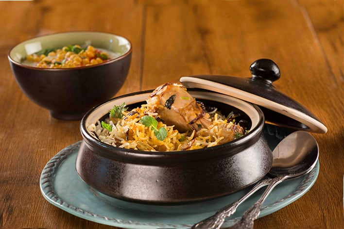

The famous Hyderabadi Biryani came into being after Emperor Aurangzeb appointed Niza-Ul-Mulk as the new ruler of Hyderabad. It is believed that his chefs created almost 50 different versions that used fish, shrimp, quail, deer, and even hare meat. The aromatic saffron is the star of this dish.
There are two versions of Hyderabadi biryani:
- Pakki biryani - cooked meat or chicken is layered with parboiled rice and steamed together.
- Kacchi biryani - raw marinated meat or chicken is placed in a single layer in the bottom of cooking pot and topped with partially cooked rice and steamed together.
What sets apart biryani is the texture of the rice grains - fluffy and separate, they almost scatter like pearls.
WHY THIS METHOD WORKS?
- You have to cook the chicken separately before layering it with the rice.
- Reliable and easy rice cooking technique for perfectly fluffy rice.
